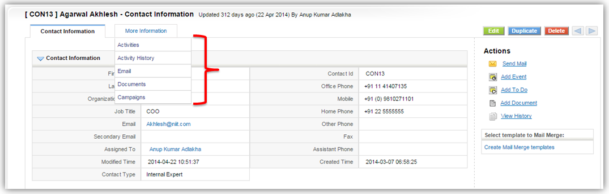

PE Front Office offers a set of default fields. Layout Editor feature enables you to create custom fields, rearrange fields, edit field properties, and move fields inside the block. The fields you create are accessed by all users across your PE Front Office account, unless you've defined permissions through Profiles.
Getting Started
You can navigate to Edit Fields and Layout Editor in two different ways.
Through settings
-
Click
 gear icon in the top right corner.
gear icon in the top right corner.
- Click CRM Settings.
- Click Module Manager under Studio.
-
Click on Settings icon
 next to the module in which you want to make changes.
next to the module in which you want to make changes.
- Click on Layout Editor.
Through corresponding module
- Click desired module Eg: Contacts.
-
Click on Settings icon
at the top.
- Click on Layout Editor.
Adding Custom Fields
This feature enables you to add custom fields in addition to default fields offered by PE Front Office.
Follow few simple steps to add custom fields in selected module
- Click Add Custom Field icon at the top right of the block.
- Select the type of field you want to add. For example - Text, Number, etc.
- Provide the values for field attributes. For example - Label and Length for Text field.
- To update changes, click Save.
You will see Create Custom Field pop-up.
Custom Fields Table
PE Front Office offers a wide variety of choices in creating custom fields to accord your business requirements. The following table gives complete information of custom Fields that are supported in PE Front Office.
| Field Type | Description | Fields Information |
|---|---|---|
| Text | To add text |
|
| Number | To add number |
|
| Percent | To add percentage |
|
| Currency | To add currency values |
|
| Date | To add date |
|
| To add email address |
|
|
| Phone | To add Phone number |
|
| Pick List | To add drop-down fields |
|
| URL | To add website address |
|
| Check-Box | Enable check-box for true. Disable for false |
|
| Text Area | To add long text |
|
| Multi-Select Combo Box | Add picklist field to select multiple values |
|
| Skype | To add skype id |
|
| Time | To add time |
|
Creating Custom Block
This feature enables you to create new blocks in addition to default blocks offered by PE Front Office.
Follow few simple steps to create a new custom block
- Click Add Block button at the top right corner.
- 2. It brings up a pop-up. Provide label in Block Name and select a block from After drop-down to place your next to selected block.
- 3. Click Save to update changes.
Rearranging Fields
PE Front Office gives you the flexibility to rearrange the arrangement of the fields according to your business requirements. Rearrangement can be done with fields or the entire block using the arrows as shown in the image below.
Editing Field Properties
This feature helps you to configure basic preferences of fields in PE Front Office.
Follow few simple steps to edit field properties
- Click pencil icon next to your desired field.
- 2. It brings up a pop-up that has set of options that can be configured on selected module.
| Field Property | Functionality |
|---|---|
| Mandatory field | To make the field mandatory for the Users to fill in |
| Active | To enable or hide the field for all users |
| Quick Create | To make the field available in Quick Create popup |
| Mass Edit | To make the field available during mass edit |
| Default Value | To set default value for the field |
- 3. After modifying field properties, click Save.
Note! Some Checkboxes are disabled in some fields because their properties cannot be edited (which otherwise can lead to inconsistency in the CRM)
Deleting Fields
If custom fields created by you do not meet your requirements, you can delete them permanently. Deleting custom fields will also delete data associated with it. In contrary to delete option, you can also hide specific field, so that it is not used by other users.
Follow few simple steps to delete custom fields
- Click pencil icon next to your desired field.
- Click on Delete button.
In the alert message click Yes.
Notes! You can only delete custom fields. Default fields can't be deleted.
Hiding Fields
This feature enables you to hide fields, so that they are not used by users in PE Front Office. This has an advantage over delete field option because hiding fields will not delete data associated with it and hidden fields can be restored when required.
Follow few simple steps to hide fields
- Click pencil icon next to your desired field.
- It brings up a pop-up that has set of options that can be configured on selected module.
- Disable the Active checkbox to hide specific field.
- Click Save to update changes.
Notes! You can hide both custom and default fields.
Arranging Related List
Related list contains modules that are directly or indirectly related to parent module. The idea is to organize data and project information at one place and reduce clicks. You can view related tabs of a parent module in detail view of selected record in any module.

This feature enables you to configure related tabs list according
to your requirements. You can either rearrange the tabs or disable
them.
Follow few simple steps to configure related list
- Click Arrange Related List button in Layout Editor.
- 2. Use up and down arrows to arrange items in the list.
- 3. Changes will be updated automatically on clicking the arrow.
Making Fields Mandatory/Non-mandatory
Mandatory fields are fields that you should fill in. You cannot create or import records without filling or mapping mandatory fields. You have complete power over fields across modules in PE Front Office. You can make desired fields mandatory or non-mandatory according to your requirements.
Here's how to make desired fields mandatory
- Click pencil icon next to your desired field.
- It brings up a pop-up that has set of options that can be configured on selected module.
- Enable the Mandatory checkbox to make the field mandatory.
- Click Save to update changes.
- To make the field Non-mandatory, follow the same process and but disable the Mandatory checkbox.
Notes! You cannot make few fields non-mandatory. Eg: Last Name in Contacts module. These fields are made mandatory to establish relation between modules in PE Front Office